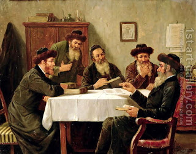

Kiddushin 67 - Legitimate children and bastards

Sometimes the child's status follows the father, sometimes the mother, and at other times the child is not Jewish at all.
Here is the first rule: if the marriage is legitimate, the child follows the father. An example is a Kohen who marries
a daughter of another Kohen, a Levi, or an "Israel" Jew. In all the cases the son is a Kohen.
However, if the marriage is a forbidden one, but takes effect nevertheless, then the offspring follows the blemished party.
For example, if a woman mamzer marries a regular Jew, the child is a mamzer. Or if a man who himself is a mamzer
marries a regular Jewish woman, that child is also a mamzer.
The next rule explain what is a mamzer. If the union is such that the marriage between them would not even take effect,
although they can marry someone else, then the child is a mamzer. Examples include brother and sister, or a man
and someone else's wife - since she is already married. Finally, a marriage with a non-Jew is never effective, and
in this case the child follows the mother: if the mother is Jewish, although the the father is not - the child is Jewish.
If the mother is not Jewish, then the child is not Jewish, regardless of who the father is. This is the case when the marriage
does not take effect, and the person in question could not get married to another Jew either.
Art: Jewish Scholars Debating by Josef Johann Suss